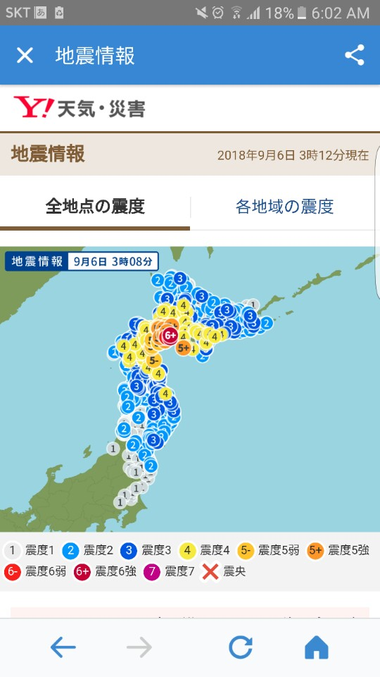

#철도이야기 5
2018년 9월 6일 오전 3시 8분에 일본 홋카이도 이부리 종합진흥국 아츠마 정（北海道胆振総合振興局厚真町）을 진원으로 최대진도 6강의 지진이 발생했다. 이부리 지방, 히다카（日高） 지방, 홋카이도의 현관 신치토세공항（新千歳空港）과 홋카이도 최대 도시 삿포로（札幌）가 위치한 이시카리（石狩） 지방에서 진도 5가 관측되는 등 꽤 규모가 큰 지진이었다. 이 지진으로 이부리 종합진흥국 아츠마 정에서는 산사태가 발생해 마을이 매몰되는 등의 사고가 잇따랐고, 홋카이도 남부 하코다테（函館）와 중부 삿포로에 걸쳐 대규모 정전이 발생하는 등 피해가 속출하고 있다.
이날 아침에 일어났는데 폰에 지진속보가 와 있었다.
JR 홋카이도（JR北海道）는 이 지진으로 한때 홋카이도 내 전 노선의 운행을 중지하였다. JR 계열사 중에서 최대 적자가 나고 있는 회사 중 하나인데, 이 지진으로 인해 입은 재정적 피해는 막대할 것으로 본다.
9월 15일 기준 홋카이도 운행 정보이다.14일 첫차부터 운전 재개 구간
- 삿포로~오비히로/구시로 간 특급 ‘슈퍼 오오조라’, ‘슈퍼 토카치’ 첫차부터 운전 재개
- 센모선 구시로~마슈 간 16시부터 운전 재개 (센모선이면 나카시베츠 쪽 홋카이도 동부인데 그쪽까지 지진이 영향을 주었다는 걸 보면 지진의 규모가 꽤 컸던 것을 알 수 있다. 아니면 평소에 제대로 유지/보수가 잘 이루어지지 않던 구간이라 약간의 지진에도 피해가 컸을 수 있다. JR 홋카이도는 재정 상황이 심각한 회사라 충분히 가능한 시나리오이다.)
15일 첫차부터 운전 재개 구간
- 하코다테선 오샤맘베~굿챤 간 (와, 여기 드디어 복구 완료했구나! JR 홋카이도 주력 노선인 하코다테~삿포로에는 사실 두 가지 루트가 있는데, 오샤맘베（長万部）에서 하코다테선을 경유해 니세코（ニセコ）, 오타루（小樽）를 거쳐 삿포로 서쪽으로 들어가는 루트와 오샤맘베에서 무로란본선（室蘭本線）을 경유해 도오야（洞爺）, 다테몬베츠（伊達紋別）, 무로란（室蘭）, 노보리베츠（登別）, 도마코마이（苫小牧）, 치토세（千歳）를 거쳐 삿포로 동쪽으로 들어가는 루트가 있다. 1986년 11월 1일 JR 홋카이도 다이아 개정으로 특급과 급행이 폐지된 이후로는 정기 열차가 운행하지 않고,
운행 보류 구간
- 무로란선 도마코마이~이와미자와 간 (오이와케（追分） 경유)
- 히다카선 도마코마이~무카와 간 (일부 대체 버스 운행)
- 가쿠엔토시선 홋카이도이료다이가쿠~신토츠카와 간 (가쿠엔토시선（学園都市線）도 사실 삿포로 권에서 메이저 노선 축이 끼지만 홋카이도이료다이가쿠（北海道医療大学） 이북으로는 이용자 수가 꽤 적다.)
- 세키쇼선 신유바리~유바리 간
- 네무로선 타키카와~후라노~히가시시카고에 간 (히가시시카고에~신토쿠 간 대체 버스 운행)
- 센모선 마슈~아바시리 간 (홋카이도에 여러 외곽 지역이 있지만 여기는 외곽 중에서도 외곽 구역이라 할 수 있을 듯 하다. 복구가 늦어지는 것은 당연지사.)
- 하나사키선 앗케시~네무로 간 (어딘지로 모르겠다 여긴…)
전반적인 개요는 이러하다. 아, 그리고 삿포로 근교로는 9/10부터 긴급 절전 태세에 들어가 전력수요가 많아지는 시간대를 중심으로 삿포로~아사히카와（旭川）/무로란 간 일부 특급열차와 무로란선 히가시무로란~무로란 간 일부 보통열차를 운휴한다고 한다. 상황이 심각하긴 한가보다.
영상도쿄 발 신하코다테호쿠토 행 하야부사 1호가 9월 7일에는 신아오모리 행으로 행선지를 바꿔 단축운행하고 있었다. 이 영상은 단축운행 하야부사 1호의 전구간 주행 영상인데, 센다이 모리오카 간을 달리던 1시간 50분 쯤 차장이 흥미로운 방송을 한다.
“新幹線をご利用くださいましてありがとうございます。はやぶさ１号の本日の終点は新青森です。新青森から先北海道新幹線について新しい情報が入りましたのでお知らせ致します。昨日から運転を見合わせておりました新青森から先新函館北斗までの北海道新幹線について新しい情報が入りましたのでお知らせ致します。運転再開の見込みが立った模様です。今日のはやぶさ１１号から運転を再開すると情報が入っております。なお、運転再開の最初の列車になるますので相当の混雑が予想されます。
“신칸센을 이용해주셔서 감사합니다. 오늘 하야부사 1호의 행선지는 신아오모리입니다. 어제부터 운행을 보류하던 신아오모리~신하코다테호쿠토 간 홋카이도신칸센에 대한 새로운 정보가 들어와 안내말씀 드립니다. 오늘 하야부사 11호부터 운전을 재개할 것이라는 정보가 들어와 있습니다. 운전을 재개하는 첫 열차가 되는 만큼 상당한 혼잡이 예상됩니다.” (한국어로 번역하니 뭔가 어색하다.)
신기하다.